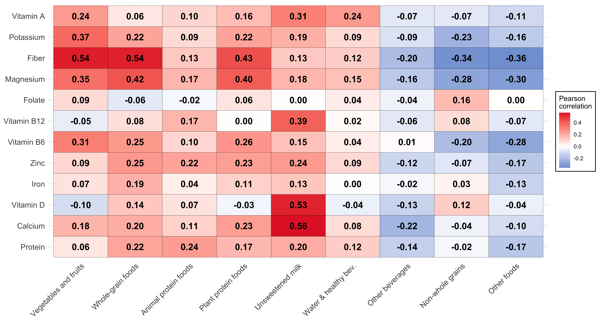
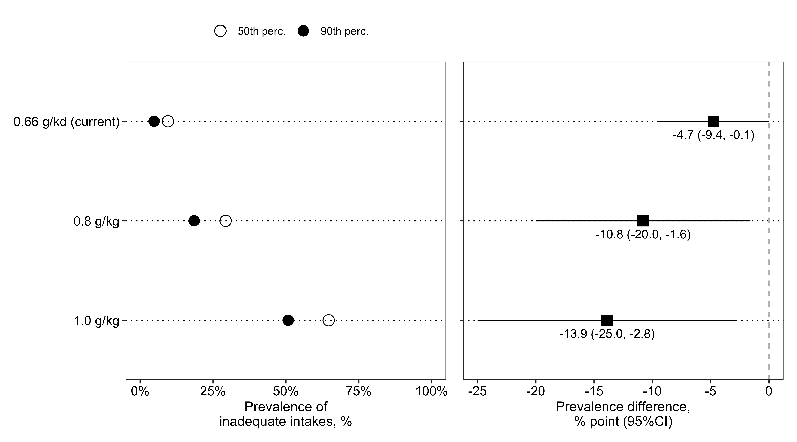

Research Institute of the McGill University Health Centre
Published
August 3, 2023
Code
## Is the output for MS word?OUTPUT_WORD <-"N"# ********************************************** ## Markdown set-up ## ********************************************** #knitr::opts_chunk$set(echo =TRUE,message =FALSE,warning =FALSE,dpi =300,out.width ="80%",fig.env ="figure",fig.align ="center" )## suppress scientific notationoptions(scipen =9999)## file path path <- here::here()# ********************************************** ## Relative file paths ## ********************************************** ## create directory to save figures/table/data, if neededif(dir.exists(here::here("Manuscript"))==FALSE){dir.create(here::here("Manuscript"))}if(dir.exists(here::here("Data", "Results"))==FALSE){dir.create(here::here("Data", "Results"))}suppl_dir <- here::here("Manuscript")res_dir <- here::here("Data","Results")# *********************************************** ## Packages ## *********************************************** ### data managementlibrary(haven)library(tidyverse)## results presentationlibrary(ggplot2)library(patchwork)library(gt)library(tinytex)library(MetBrewer)## saving gt object vs. printing directly gtsave_select <-function(object,label,docx){if(docx =="Y"){# save as docx object |> gt::gtsave(here::here(suppl_dir,paste0(label,".docx")))} else {# print gt object directly object}}# *********************************************** ## Common labels ## *********************************************** #### DRI groupsdrig_list <-c(0,12,13,14,15)drig_label <-c('Adults 65y+','Males, 65 to 70 y','Females, 65 to 70 y','Males, 71 y+','Females, 71 y+')drig_plotlabel <-c('12'='Males, 65 to 70 years','13'='Females, 65 to 70 years','14'='Males, 71 or older','15'='Females, 71 or older')### Nutrient variable namesvarname_list <-c('pro','pro_kg','calcium','vit_d','iron','zinc','vit_b6','vit_b12','dfe','mg','pota','fibers','rae')varlabeltidy_list <-c( pro='Protein', pro_kg='Protein', calcium='Calcium', vit_d='Vitamin D', iron='Iron', zinc='Zinc', vit_b6='Vitamin B6', vit_b12='Vitamin B12', #dfe='Dietary folate equivalent', dfe='Folate',mg='Magnesium', pota='Potassium', fibers='Fiber',rae='Vitamin A' )# ********************************************** ## Functions ## ********************************************** ## <tolower1>: lower case,but only for first letter (works for 1 word) tolower1 <-function(x) {substr(x, 1, 1) <-tolower(substr(x, 1, 1))return(x) }# <makeEstimateSD> to format mean (SD) (within mutate step for example)makeEstimateSD <-function(est,var,rounding=0.1){paste0( scales::number(est,accuracy = rounding,big.mark=",")," (",scales::number(var,accuracy = rounding,big.mark=",",),")")}# <makeEstimateCI> to format Estimate (95%CI) (within mutate step for example)makeEstimateCI <-function(est,lcl,ucl,sep=" to ",numsep=",",rounding=0.1){paste0( scales::number(est,accuracy = rounding,big.mark=numsep)," (",scales::number(lcl,accuracy = rounding,big.mark=numsep), sep, scales::number(ucl,accuracy = rounding,big.mark=numsep),")") }make95ci <-function(x,sep=", ",rounding=0.01,reverse=0,add_suffix=""){ lcl <-paste0(scales::number(x$lcl95,accuracy=rounding),add_suffix) ucl <-paste0(scales::number(x$ucl95,accuracy=rounding),add_suffix)if(reverse==0){# Regular ordering, estimate (LCL to UCL)return(noquote( paste0(lcl,sep,ucl) ) ) } else {# Reversed ordering, estimate (UCL to LCL)return(noquote( paste0(ucl,sep,lcl) ) ) }}# Cleveland dot plottheme_dotplotx <-function() { ggplot2::theme( ## remove the vertical grid linespanel.grid.major.x =element_blank() ,panel.grid.minor.x =element_blank() ,## explicitly set the horizontal lines (or they will disappear too)panel.grid.major.y =element_line(color="black", linetype =3),axis.text.y =element_text(size=rel(1.2),color="black"),axis.text.x =element_text(size=rel(1.2),color="black"),## use a white backgrounsdpanel.background =element_rect(fill ="white", colour =NA),panel.border =element_rect(fill =NA, colour ="grey20"))}## GT Table style gtstyle <-function(gtobject,footnote_marker="numbers"){ gtobject |> gt::tab_style(style =list(cell_text(weight ="bold") ),locations =cells_row_groups(groups =everything()) ) |> gt::opt_align_table_header("left") |> gt::opt_footnote_marks(marks=footnote_marker) }# Additional R functionssource(here::here("Macros","statDistrib.R"))# ********************************************** ## Initialize Suppl. Table index ## ********************************************** # stable_index <-1
Supplemental Methods
The Healthy Eating Food Index (HEFI) 2019
Supplemental Table 1 presents the HEFI-2019 (Brassard et al. 2022) components, points and thresholds for scores.
Code
# ********************************************** ## Prepare table using manual data ## ********************************************** #tab_hefi <- readxl::read_xlsx(path=file.path(res_dir,"table_data.xlsx"),sheet="score") |> gt::gt() |> gt::cols_label(no ="No.",name ="Component name",measurement ="Measurement (ratio)",points ="Maximum Points",unit ="Unit",min ="Standard for minimum score",max ="Standard for maximum score" ) |> gt::tab_style(style =list(cell_text(weight ="bold") ),locations =cells_column_labels(columns=everything()) ) |> gt::tab_style(style =list(cell_text(style="italic") ),locations =cells_body(columns=2) ) |> gt::tab_header(title =paste0("Supplemental Table ",stable_index,". Healthy Eating Food Index (HEFI)-2019 components, points and standards for scoring")) |> gt::tab_footnote(footnote ="All vegetables and fruits regardless of saturated fat, sodium or free sugar content; excludes fruit juice (i.e., considered as sugary drinks in CFG-2019).",locations =cells_body(columns=name,rows=1)) |> gt::tab_footnote(footnote ="Total foods include all foods consumed as well as beverages considered in protein foods (i.e., unsweetened milk and unsweetened plant-based beverages that contain protein); excludes all other beverages as well as solid fats, oils and spreads and culinary ingredients (e.g., spices and baking soda).",locations =cells_body(columns=measurement,rows=c(1:2,4) ) ) |> gt::tab_footnote(footnote ="Foods where the first ingredient is either whole grains or whole wheat, regardless of saturated fat, sodium or free sugar content.",locations =cells_body(columns=name,rows=3) ) |> gt::tab_footnote(footnote ="Foods where the first ingredient is a grain (whole or not) regardless of saturated fat, sodium or free sugar content.",locations =cells_body(columns=measurement,rows=3) ) |> gt::tab_footnote(footnote ="All protein foods regardless of fat, sodium or sugars content; excludes processed meats (i.e., not considered protein foods in CFG-2019) and sweetened milks (i.e., considered as sugary drinks in CFG-2019).",locations =cells_body(columns=name,rows=4) ) |> gt::tab_footnote(footnote ="All plant-based protein foods, regardless of saturated fat, sodium or free sugar content.",locations =cells_body(columns=name,rows=5 ) ) |> gt::tab_footnote(footnote ="Unsweetened beverages include unsweetened coffee and tea, unsweetened milk and unsweetened plant-based beverages. Total beverages include water (plain or carbonated), coffee, tea, milk and plant-based beverages, fruit and vegetable juices, alcoholic drinks, artificially sweetened beverages and sugary drinks.",locations =cells_body(columns=measurement,rows=6) ) |> gt::tab_footnote(footnote ="Approximately the 15th percentile of intake based on data (single 24-h dietary recall) in Canadians from the 2015 CCHS – Nutrition.",locations =cells_body(columns=min,rows=7 ) ) |> gt::tab_footnote(footnote ="Corresponds to the 1st percentile of unsaturated to saturated fats ratios among simulated diets developed to be fully consistent with all recommendations in CFG-2019. ",locations =cells_body(columns=max,rows=7 ) ) |> gt::tab_footnote(footnote ="Approximately the 85th percentile of intake based on data (single 24-h dietary recall) in Canadians from the 2015 CCHS – Nutrition. ",locations =cells_body(columns=min,rows=8:9 ) ) |> gt::tab_footnote(footnote ="Standard for maximum points based on the Chronic Disease Risk Reduction for 14+ years (i.e., 2300 mg) over the 90th percentile of usual energy intakes in respondents 2 years and older from the 2015 CCHS – Nutrition (i.e., approximately 2600 kcal).",locations =cells_body(columns=max,rows=10 ) ) |># gt::tab_source_note(# source_note = "Table adapted from Brassard et al. Appl Physiol Nutr Metab. 2022. CCHS, Canadian Community Health Survey; CFG-2019, Canada's food guide 2019; HEFI-2019, Healthy Eating Food Index 2019; RA, Reference Amounts (amount of food usually eaten by an individual at one sitting); %E, percent of total energy.") |># note: for some reason, gt() failed to render when the source is added here.gtstyle(footnote_marker="numbers")# *********************************************************************** ## Use <gtsave_select> function to print table directly or save as docx ## *********************************************************************** #gtsave_select(tab_hefi,paste0("SupplTable ",stable_index,". hefi2019"),OUTPUT_WORD)
Supplemental Table 1:
tbl-hefi
Supplemental Table 1. Healthy Eating Food Index (HEFI)-2019 components, points and standards for scoring
No.
Component name
Measurement (ratio)
Maximum Points
Unit
Standard for minimum score
Standard for maximum score
1
Vegetables and fruits1
Total vegetables and fruits / Total foods2
20
RA/RA
No vegetables and no fruits
≥ 0.50
2
Whole-grain foods
Total whole-grain foods / Total foods2
5
RA/RA
No whole-grain foods
≥ 0.25
3
Grain foods ratio3
Total whole-grain foods / Total grain foods4
5
RA/RA
No whole-grain foods
= 1.0
4
Protein foods5
Total protein foods / Total foods2
5
RA/RA
No protein foods
≥ 0.25
5
Plant-based protein foods6
Plant-based protein foods / Total protein foods
5
RA/RA
No plant-based protein foods
> 0.50
6
Beverages
(Plain water including carbonated + unsweetened beverages) / Total beverages7
10
g/g
No water and no unsweetened beverages
= 1.0
7
Fatty acids ratio
(Mono- + polyunsaturated fat) / Total saturated fat
5
g/g
≤ 1.18
≥ 2.69
8
Saturated fats
Total saturated fat / energy
5
%E (kcal/kcal)
≥ 15%E10
< 10%E
9
Free sugars
Total free sugars / energy
10
%E (kcal/kcal)
≥ 20%E10
< 10%E
10
Sodium
Total sodium / energy
10
mg / kcal
≥ 2.0
< 0.911
1 All vegetables and fruits regardless of saturated fat, sodium or free sugar content; excludes fruit juice (i.e., considered as sugary drinks in CFG-2019).
2 Total foods include all foods consumed as well as beverages considered in protein foods (i.e., unsweetened milk and unsweetened plant-based beverages that contain protein); excludes all other beverages as well as solid fats, oils and spreads and culinary ingredients (e.g., spices and baking soda).
3 Foods where the first ingredient is either whole grains or whole wheat, regardless of saturated fat, sodium or free sugar content.
4 Foods where the first ingredient is a grain (whole or not) regardless of saturated fat, sodium or free sugar content.
5 All protein foods regardless of fat, sodium or sugars content; excludes processed meats (i.e., not considered protein foods in CFG-2019) and sweetened milks (i.e., considered as sugary drinks in CFG-2019).
6 All plant-based protein foods, regardless of saturated fat, sodium or free sugar content.
7 Unsweetened beverages include unsweetened coffee and tea, unsweetened milk and unsweetened plant-based beverages. Total beverages include water (plain or carbonated), coffee, tea, milk and plant-based beverages, fruit and vegetable juices, alcoholic drinks, artificially sweetened beverages and sugary drinks.
8 Approximately the 15th percentile of intake based on data (single 24-h dietary recall) in Canadians from the 2015 CCHS – Nutrition.
9 Corresponds to the 1st percentile of unsaturated to saturated fats ratios among simulated diets developed to be fully consistent with all recommendations in CFG-2019.
10 Approximately the 85th percentile of intake based on data (single 24-h dietary recall) in Canadians from the 2015 CCHS – Nutrition.
11 Standard for maximum points based on the Chronic Disease Risk Reduction for 14+ years (i.e., 2300 mg) over the 90th percentile of usual energy intakes in respondents 2 years and older from the 2015 CCHS – Nutrition (i.e., approximately 2600 kcal).
Code
stable_index <- stable_index+1
Table adapted from Brassard et al. Appl Physiol Nutr Metab. 2022. CCHS, Canadian Community Health Survey; CFG-2019, Canada’s food guide 2019; HEFI-2019, Healthy Eating Food Index 2019; RA, Reference Amounts (amount of food usually eaten by an individual at one sitting); %E, percent of total energy.
Supplemental Results
Usual food and nutrient intakes
Supplemental Table 2 and Table 3 presents estimated means and percentile of the distribution of foods, beverages and nutrients considered in the HEFI-2019 score.
Code
# *********************************************************************** ## Import data for descriptive table of dietary constituents ## *********************************************************************** ## Read mcmc data and save as <rds> for efficiency purposeif(file.exists(file.path(res_dir,"usintake_mc_t_out0.rds"))==FALSE){## record time tictoc::tic(msg ="loading <NCI/MCMC_score/Model/_usintake_mc_t_out0.sas7bdat>")## read mcmc data on external drive once, write as .rds file for future use haven::read_sas(file.path(path, 'NCI', 'MCMC_score', 'Model', '_usintake_mc_t_out0.sas7bdat')) |>### drop some variables as only dietary intake data used hereselect(-c(weight_nw_sumw, starts_with("HEFI"), starts_with("RATIO"), catscore, starts_with("Prob"), energy_unit)) |>saveRDS(file =file.path(res_dir,"usintake_mc_t_out0.rds"))## show time tictoc::toc()} else {## file already exists, do nothing elsemessage("note: <usintake_mc_t_out0.rds> data found in <./Data/Results/>")}# note: the SAS format <.sas7bdat> produces ~ 1.5-folder larger data# read rds file, apply some formattingmcmc <-readRDS(file =file.path(res_dir,"usintake_mc_t_out0.rds")) |>mutate(milk_ra = milk/258 ) |># note: could keep both variables, but focus on RA here for simplicity and consistencyselect(-milk) |>rename(milk=milk_ra)# Generate distribution of all dietary constituents# ******************************* ## loop <statDistrib> ## ******************************* ## Objective: given a data, loop distrib of all components# create list of dietary constituents of interest:dietary_constituents_list <-c("wg", "pfpb", "otherbevs", "milk", "rg", "vf", "otherfoods", "pfab","water", "mufa", "pufa", "sfa", "freesugars", "sodium", "energy", "totfoodsRA", "SUG_PERC", "SFA_PERC", "SODDEN")food_list <-c("vf", "wg", "pfpb", "pfab", "otherbevs", "milk", "water", "rg", "otherfoods","totfoodsRA")nutrients_list <-c("mufa", "pufa", "sfa", "SFA_PERC", "freesugars", "SUG_PERC", "sodium", "SODDEN", "energy")# loop functionloop_statDistrib <-function(indata, variables, weighting, replicnum =0) {# The function loop_statDistrib takes in a dataset indata (assumed to be a data.frame), a vector of variable names variables, a variable name for the weighting column weighting, and an optional replicnum parameter to indicate the replication number. It loops through each variable in variables, applies the <statDistrib> function to that variable using the indata[[variables[i]]] syntax, and stores the results in a list. Finally, it combines all the results into a single data.frame with additional columns for replicnum, Variable, and Index. The resulting data.frame contains summary statistics (mean, standard deviation, percentiles) for each variable, weighted by the values in the weighting column.# initialize an empty list to store the results results <-list()# loop through each variable and run the functionmessage("loop_statDistrib: processing ",appendLF =FALSE)for (i inseq_along(variables)) { current_var <- indata[[variables[i]]] result <-statDistrib(current_var, w = indata[[weighting]]) result$Index <- i result$Variable <- variables[i] results[[i]] <- resultmessage(".",appendLF =FALSE) }message("Done!")# note: could have used purrr for the distrib loop.# combine the results into a single data frame results_df <-do.call(rbind, results)# add replicnum and reorder columns results_df_r <-data.frame(Replicate = replicnum,Variable = results_df$Variable,Index = results_df$Index,Mean = results_df$Mean,StdDev = results_df$StdDev,setNames(as.list(results_df[, 3:101]), paste0("Pctile", 1:99)) )# return the final data framereturn(results_df_r)}# ********************************************** ## Call function to loop distrib analysis ## ********************************************** ## all dietary constituentsdistrib_w <-loop_statDistrib(indata = mcmc,variables = dietary_constituents_list,weighting ="weight_nw_sumw_div") |>mutate(## indicate roundingdecimals =case_when( Variable %in%c("otherbevs", "water","sodium", "mufa", "pufa", "sfa", "freesugars", "energy") ~1, .default =0.1 ),## create combine estimates of mean+sdmean_sd =makeEstimateSD(Mean,StdDev, rounding = decimals),## Classify foods/nutrientstype =ifelse(Variable %in% nutrients_list, "Nutrients", "Food and beverages"),## indicate if foods and beverages cfg =case_when( Variable %in%c(nutrients_list) ~NA, Variable %in%c("otherbevs", "rg", "otherfoods") ~"Not recommended in CFG", Variable %in%c("totfoodsRA") ~"Total",.default ="Recommended in CFG") )# save data to avoid re-runningsave(distrib_w,file =file.path(res_dir,"usual_diet_distrib_w.rdata"))
# See <descr-intake-tbl> chunk for data preparation# *********************************************************************** ## Food and beverages ## *********************************************************************** #tab_descr_food <- distrib_w |>filter(type!="Nutrients") |>select(cfg, Variable_f, mean_sd, all_of(pctile_list)) |>arrange(Variable_f) |>group_by(cfg) |> gt::gt() |> gt::fmt_number(columns =all_of(pctile_list), rows=c(1:5, 8:10), decimals =1) |> gt::fmt_number(columns =all_of(pctile_list), rows=c(6:7), decimals =0) |> gt::tab_spanner(label ="Percentile",columns =all_of(pctile_list) ) |> gt::cols_label(Variable_f ="Categories",mean_sd ="Mean (SD)",Pctile1 =1, Pctile5 =5, Pctile10 =10, Pctile25 =25, Pctile50 =50,Pctile75 =75, Pctile90 =90, Pctile95 =95, Pctile99 =99 ) |> gt::tab_style(style =cell_text(weight="bold"),locations =cells_column_labels(columns=everything()) ) |> gt::tab_style(style =cell_text(weight="bold"),locations =cells_column_spanners(spanners=everything()) ) |> gt::tab_header(title =paste0("Supplemental Table ",stable_index,". Estimated means and percentiles of food and beverage categories considered in the HEFI-2019 score in adults aged 65 years or more from the CCHS 2015 - Nutrition")) |> gt::tab_footnote(footnote ="All estimated means and percentiles reflect usual or long-term dietary intakes and were modelled jointly using the National Cancer Institute Markov Chain Monte Carlo (MCMC) multivariate method (see Methods section). Adapted from Statistics Canada, Canadian Community Health Survey- Nutrition: Public Use Microdata File, 2015, June 2023. This does not constitute an endorsement by Statistics Canada of this product. CCHS, Canadian Community Health Survey; CFG, Canada's Food Guide 2019; d, day; HEFI-2019, Healthy Eating Food Index-2019; RA, Reference Amounts (amount of food usually eaten by an individual at one sitting).",locations =cells_title("title") ) |> gt::tab_footnote(footnote ="The total includes all categories of foods and milk, but excludes water and healthy beverages as well as SSBs, alcohol and fruit juice. 1 RA of milk equals to 250 ml.",locations =cells_row_groups(groups="Total") ) |>gtstyle()# *********************************************************************** ## Use <gtsave_select> function to print table directly or save as docx ## *********************************************************************** #gtsave_select(tab_descr_food,paste0("SupplTable ",stable_index,". descr_food"),OUTPUT_WORD)
Supplemental Table 2:
tbl-descr-food
Supplemental Table 2. Estimated means and percentiles of food and beverage categories considered in the HEFI-2019 score in adults aged 65 years or more from the CCHS 2015 - Nutrition1
Categories
Mean (SD)
Percentile
1
5
10
25
50
75
90
95
99
Recommended in CFG
Vegetables and fruits, RA/d
3.5 (1.5)
1.0
1.5
1.8
2.4
3.3
4.3
5.5
6.3
8.2
Whole-grain foods, RA/d
0.9 (0.6)
0.0
0.1
0.1
0.4
0.8
1.3
1.7
2.0
2.5
Protein foods, animal-based, RA/d
2.1 (0.9)
0.6
0.9
1.1
1.5
2.0
2.6
3.3
3.7
4.6
Protein foods, plant-based, RA/d
0.4 (0.3)
0.0
0.1
0.1
0.2
0.3
0.6
0.9
1.1
1.6
Unsweetened milk, RA/d
0.5 (0.5)
0.0
0.0
0.1
0.2
0.4
0.8
1.2
1.6
2.4
Water and healthy beverages, ml/d
1,150 (563)
238
402
513
741
1,064
1,461
1,897
2,196
2,855
Not recommended in CFG
SSBs, alcohol and fruit juice, ml/d
335 (277)
1
14
36
119
278
480
705
864
1,226
Non-whole grain foods, RA/d
1.7 (0.8)
0.2
0.5
0.7
1.1
1.6
2.1
2.7
3.0
3.8
Other low nutritive value foods, RA/d
4.1 (2.7)
0.7
1.1
1.5
2.2
3.4
5.2
7.5
9.2
13.4
Total2
Total foods, RA/d
13.2 (4.1)
6.1
7.6
8.5
10.3
12.7
15.5
18.6
20.7
25.5
1 All estimated means and percentiles reflect usual or long-term dietary intakes and were modelled jointly using the National Cancer Institute Markov Chain Monte Carlo (MCMC) multivariate method (see Methods section). Adapted from Statistics Canada, Canadian Community Health Survey- Nutrition: Public Use Microdata File, 2015, June 2023. This does not constitute an endorsement by Statistics Canada of this product. CCHS, Canadian Community Health Survey; CFG, Canada's Food Guide 2019; d, day; HEFI-2019, Healthy Eating Food Index-2019; RA, Reference Amounts (amount of food usually eaten by an individual at one sitting).
2 The total includes all categories of foods and milk, but excludes water and healthy beverages as well as SSBs, alcohol and fruit juice. 1 RA of milk equals to 250 ml.
Code
stable_index <- stable_index+1
Code
# See <descr-intake-tbl> chunk for data preparation# *********************************************************************** ## Nutrients ## *********************************************************************** #tab_descr_nut <- distrib_w |>filter(type=="Nutrients") |>select(Variable_f, mean_sd, all_of(pctile_list)) |>arrange(Variable_f) |> gt::gt() |> gt::fmt_number(columns =all_of(pctile_list), rows=c(4, 6, 8), decimals =1) |> gt::fmt_number(columns =all_of(pctile_list), rows=c(1:3, 5, 7, 9), decimals =0) |> gt::tab_spanner(label ="Percentile",columns =all_of(pctile_list) ) |> gt::cols_label(Variable_f ="Nutrients",mean_sd ="Mean (SD)",Pctile1 =1, Pctile5 =5, Pctile10 =10, Pctile25 =25, Pctile50 =50,Pctile75 =75, Pctile90 =90, Pctile95 =95, Pctile99 =99 ) |> gt::tab_style(style =cell_text(weight="bold"),locations =cells_column_labels(columns=everything()) ) |> gt::tab_style(style =cell_text(weight="bold"),locations =cells_column_spanners(spanners=everything()) ) |> gt::tab_header(title =paste0("Supplemental Table ",stable_index,". Estimated means and percentiles of nutrients considered in the HEFI-2019 score in adults aged 65 years or more from the CCHS 2015 - Nutrition.")) |> gt::tab_footnote(footnote ="All estimated means and percentiles reflect usual or long-term dietary intakes and were modelled jointly using the National Cancer Institute Markov Chain Monte Carlo (MCMC) multivariate method (see Methods section). Adapted from Statistics Canada, Canadian Community Health Survey- Nutrition: Public Use Microdata File, 2015, June 2023. This does not constitute an endorsement by Statistics Canada of this product. CCHS, Canadian Community Health Survey; d, day; E, energy; HEFI-2019, Healthy Eating Food Index-2019; %E, percent of total energy.",locations =cells_title("title") ) |>gtstyle()# *********************************************************************** ## Use <gtsave_select> function to print table directly or save as docx ## *********************************************************************** #gtsave_select(tab_descr_nut,paste0("SupplTable ",stable_index,". descr_nut"),OUTPUT_WORD)
Supplemental Table 3:
tbl-descr-nut
Supplemental Table 3. Estimated means and percentiles of nutrients considered in the HEFI-2019 score in adults aged 65 years or more from the CCHS 2015 - Nutrition.1
Nutrients
Mean (SD)
Percentile
1
5
10
25
50
75
90
95
99
MUFA, g
23 (7)
10
13
15
18
22
27
32
36
44
PUFA, g
13 (4)
6
8
9
10
12
15
18
20
24
SFA, g
21 (7)
9
11
13
16
20
24
30
33
40
SFA, %E
11.1 (2.0)
7.0
8.0
8.6
9.7
11.0
12.4
13.8
14.7
16.6
Free sugars, g
46 (26)
7
14
18
28
41
58
79
95
132
Free sugars, %E
10.7 (4.5)
2.2
4.1
5.3
7.5
10.3
13.4
16.6
18.7
23.2
Sodium, mg
2,431 (621)
1,277
1,530
1,684
1,977
2,367
2,824
3,269
3,551
4,095
Sodium, g/1000 kcal
1.5 (0.2)
1.0
1.1
1.2
1.3
1.5
1.6
1.8
1.9
2.2
Energy, kcal
1,663 (428)
862
1,043
1,152
1,355
1,618
1,926
2,239
2,440
2,833
1 All estimated means and percentiles reflect usual or long-term dietary intakes and were modelled jointly using the National Cancer Institute Markov Chain Monte Carlo (MCMC) multivariate method (see Methods section). Adapted from Statistics Canada, Canadian Community Health Survey- Nutrition: Public Use Microdata File, 2015, June 2023. This does not constitute an endorsement by Statistics Canada of this product. CCHS, Canadian Community Health Survey; d, day; E, energy; HEFI-2019, Healthy Eating Food Index-2019; %E, percent of total energy.
Code
stable_index <- stable_index+1
Relationship between food and beverage categories of the HEFI-2019 and nutrient intakes
Supplemental Figure 1 presents the energy-adjusted correlation among food and beverage categories contributing to the HEFI-2019 and nutrient intakes.
Code
# *********************************************************************** ## Generate correlation heat map figure ## *********************************************************************** ## Load data created in <corr-data> in manuscript quarto fileload(file =file.path(res_dir, "suppl_corr_t_melted.rdata"))# ********************************************** ## Figure using ggplot2 ## ********************************************** #corr_heatmap <- suppl_corr_t_melted |>ggplot(aes(x=variable_f, y=nutrient_f, fill = value)) +geom_tile(color ="black") +scale_fill_gradient2(low ="#0070C0", high ="#E42832", mid ="white",midpoint =0, limit =c(min(suppl_corr_t_melted$value),max(suppl_corr_t_melted$value)),space ="Lab", name="Pearson\ncorrelation",na.value='#D6D6D6') +geom_text(aes(label = scales::number(value, accuracy =0.01)),fontface="bold", color ="black", size =5) +theme_minimal() +labs(x="Food and beverage categories",y=NULL) +theme(axis.text.x =element_text(angle =45, vjust =1, hjust =1,size=12 ),axis.text.y =element_text(size=12 ),axis.title.x=element_blank(),#legend.justification = c(1, 0),#legend.direction = "horizontal",legend.position ="right",plot.background =element_rect(fill="white",colour ="white"),panel.border =element_blank(),legend.background=element_rect(fill="white"))corr_heatmap# ********************************************** ## Export graph as PDF/PNG ## ********************************************** #ggsave(here::here(suppl_dir,"SupplFig1_corr_heatmap.pdf"),plot=corr_heatmap, dpi=300, width=13,height=7, units="in",scale=1, device=cairo_pdf)ggsave(here::here(suppl_dir,"SupplFig1_corr_heatmap.png"),plot=corr_heatmap, dpi=300, width=13,height=7, units="in",scale=1)

Supplemental Figure 1: Pearson correlations heat map among food and beverage categories contributing to the HEFI-2019 and nutrient intakes in adults aged 65 years or more from the CCHS 2015 - Nutrition. A higher correlation indicates that higher food or beverage intakes are associated with higher nutrient intakes and vice versa. All dietary intakes were modelled using the National Cancer Institute Markov Chain Monte Carlo multivariate method to estimate usual intakes (see Methods). Adapted from Statistics Canada, Canadian Community Health Survey- Nutrition: Public Use Microdata File, 2015, June 2023. This does not constitute an endorsement by Statistics Canada of this product. Bev, beverages; CCHS, Canadian Community Health Survey.
Prevalence of inadequate nutrient intake
Code
# ************************************************************************ ## Import SAS data on marginal Pr(X<EAR) ## ************************************************************************ ## note: mrg, marginal (crude population average)# If data has not been created+saved in <9.1-HEFI19-NUT_ARTICLE.qmd>, do it hereif(file.exists(file.path(res_dir,"mrg_all.rdata"==FALSE))){# ********************************************** ## Protein ## ********************************************** #mrg_pro <- haven::read_sas(file.path(path,'NCI', 'MCMC_pro', 'Results', 'distrib_y_rel_wf.sas7bdat')) |>### Hardcoded value for Pr(X<EAR) dplyr::filter(name=="Prob1") |># Add nutrient identifier dplyr::mutate(varname="pro")# ********************************************** ## Calcium and Vitamin D ## ********************************************** #mrg_cavitd <- haven::read_sas(file.path(path,'NCI', 'MCMC_ca_vit_d', 'Results', 'distrib_y_wf.sas7bdat')) |> dplyr::slice(grep("EAR",name)) # ********************************************** ## Iron, Zinc, Vit. B6, Vit. B12 ## ********************************************** #mrg_miscA <- haven::read_sas(file.path(path,'NCI', 'MCMC_miscA', 'Results', 'distrib_y_wf.sas7bdat')) |> dplyr::slice(grep("EAR",name)) # ********************************************** ## Dietary Folate Eq, Mg, K, Fibers ## ********************************************** #mrg_miscB <- haven::read_sas(file.path(path,'NCI', 'MCMC_miscB', 'Results', 'distrib_y_wf.sas7bdat')) |> dplyr::slice(grep("EAR",name)) # ********************************************** ## Vitamin A (RAE) ## ********************************************** #mrg_rae <- haven::read_sas(file.path(path,'NCI', 'MCMC_vit_a', 'Results', 'distrib_y_wf.sas7bdat')) |> dplyr::slice(grep("EAR",name)) # ********************************************** ## Append nutrient distrib ## ********************************************** #mrg_all <-rbind(mrg_pro,mrg_cavitd, mrg_miscA,mrg_miscB, mrg_rae) |># note: fibers and potassium (Pr(X<Adequate Intake)) cannot appear here, since cut-point is not EAR dplyr::filter(!(varname %in%c("fibers","pota")) )# clean temporary rm(list=c("mrg_pro","mrg_cavitd","mrg_miscA","mrg_miscB","mrg_rae"))}# load <mrg_all> data in any caseload(file =file.path(res_dir,"mrg_all.rdata"))# *********************************************************************** ## Combine manual data with prevalence estimates ## *********************************************************************** ## ********************************************** ## Load manually-entered data on EAR ## ********************************************** ## Importdata_nut <- readxl::read_xlsx(path=file.path(res_dir,"table_data.xlsx"),sheet="nutrient") |># additional formatting dplyr::mutate(## combine nutrients and their unitnutrients_unit =paste0(nutrients,", ",unit),## flag AI vs. EARdescr_value =case_when( varname %in%c("pota", "fibers") ~"AI",.default ="EAR" ),## keep only EAR for proacross(.cols =starts_with("drig"), function(x) ifelse(varname=="pro_kg",0.66,x)) ) |>select(starts_with("varname"), starts_with("nturient"), descr_value, starts_with("drig"), unit)# Prepare and combine datamrg_all_w <- mrg_all |># drop older estimate variableselect(-c(estimate_ci)) |># make new formatted estimates for tablesmutate(estimate_ci =makeEstimateCI(estimate,ifelse(lcl95<0,0,lcl95), ucl95,sep =", ", rounding=0.1) ) |># further select only identifier + formatted estimatesselect(varname, drig, estimate_ci) |># transpose long to wide for table purposepivot_wider(names_from = drig,values_from = estimate_ci,names_prefix ="drig_" )# Combine cut-off information (data_nut) with prevalence estimatessuppl_mrg_prob <-bind_rows(data_nut, mrg_all_w)# save for further analysissave(suppl_mrg_prob,file =file.path(res_dir,"suppl_mrg_prob.rdata"))# clean temporaryrm(list=c("data_nut", "mrg_all", "mrg_all_w"))
Code
# *********************************************************************** ## Table of marginal Pr(X<EAR) by DRI group ## *********************************************************************** #load(file.path(res_dir,"suppl_mrg_prob.rdata"))# note: (created in <mrg-prob-data> chunk)# Add 'clean' label to describe nutrientssuppl_mrg_prob$varname_f <-factor(suppl_mrg_prob$varname,levels = varname_list,labels = varlabeltidy_list)# Combine description of values with unit for clearer labellingsuppl_mrg_prob<- suppl_mrg_prob |>mutate(descr_value_f =case_when( descr_value =="EAR"~paste0("EAR, ",unit), descr_value =="AI"~paste0("AI, ", unit),is.na(descr_value ) ~"Pr(X<EAR), %" ) )# ********************************************** ## Generate table ## ********************************************** #tab_mrg_prob <- suppl_mrg_prob |>select(descr_value_f, varname_f, starts_with("drig")) |>group_by(varname_f) |> gt::gt() |> gt::cols_hide(columns =c(drig_0)) |> gt::cols_move_to_start(columns =c(descr_value_f)) |> gt::tab_spanner(label ="Dietary Reference Intake (DRI) age and sex group",columns =starts_with("drig_")) |> gt::cols_label(descr_value_f ="Nutrient",drig_12 ="Males, 65-70 y",drig_14 ="Males, 71 y+",drig_13 ="Females, 65-70 y",drig_15 ="Females, 71 y+" ) |> gt::tab_style(style =list(cell_text(weight ="bold") ),locations =cells_column_labels(columns=c(1:2)) ) |> gt::tab_style(style =list(cell_text(weight ="bold") ),locations =cells_column_spanners(spanners=everything()) ) |> gt::tab_style(style =cell_text(align ="left", indent =px(20)),locations =cells_body(columns=c(1,2))# remnant: which(colnames(suppl_mrg_prob)=="descr_value_f") ) |> gt::tab_header(title =paste0("Supplemental Table ",stable_index,". Cut-offs (EAR) used to assess the prevalence of intake inadequacy and prevalence estimates (Pr(X<EAR)) in adults aged 65 years or more from the CCHS 2015 - Nutrition")) |> gt::tab_footnote(footnote ="All nutrients were modelled using the National Cancer Institute Markov Chain Monte Carlo multivariate method to estimate usual intakes (see Methods). Adapted from Statistics Canada, Canadian Community Health Survey- Nutrition: Public Use Microdata File, 2015, June 2023. This does not constitute an endorsement by Statistics Canada of this product. AI, adequate intakes; CCHS, Canadian Community Health Survey; DRI, Dietary Reference Intake; EAR, Estimated Average Requirements; RAE, Retinol Activity Equivalent; X, usual nutrient intake.",locations =cells_title("title") ) |> gt::tab_footnote(footnote ="Prevalence of inadequate intakes are not calculated for potassium and fiber which do not have Estimated Average Requirements due to insufficient evidence, but only Adequate Intakes (AI) values.",locations =cells_row_groups(groups =c("Potassium", "Fiber")) ) |>gtstyle()# *********************************************************************** ## Use <gtsave_select> function to print table directly or save as docx ## *********************************************************************** #gtsave_select(tab_mrg_prob,paste0("SupplTable ",stable_index,". nutrients"),OUTPUT_WORD)
Supplemental Table 4:
tbl-mrg-prob
Supplemental Table 4. Cut-offs (EAR) used to assess the prevalence of intake inadequacy and prevalence estimates (Pr(X<EAR)) in adults aged 65 years or more from the CCHS 2015 - Nutrition1
Nutrient
Dietary Reference Intake (DRI) age and sex group
Males, 65-70 y
Males, 71 y+
Females, 65-70 y
Females, 71 y+
Protein
EAR, g/kg
0.66
0.66
0.66
0.66
Pr(X<EAR), %
3.6 (0.0, 8.6)
9.7 (4.7, 14.6)
11.5 (4.2, 18.9)
14.6 (8.9, 20.4)
Calcium
EAR, mg
800
1000
1000
1000
Pr(X<EAR), %
55.0 (46.2, 63.7)
86.9 (82.0, 91.8)
87.5 (82.6, 92.4)
93.9 (90.5, 97.2)
Vitamin D
EAR, mcg
10
10
10
10
Pr(X<EAR), %
89.4 (85.0, 93.9)
95.6 (92.3, 99.0)
99.3 (98.1, 100.5)
99.4 (97.9, 100.8)
Iron
EAR, mg
6
6
5
5
Pr(X<EAR), %
0.0 (0.0, 0.3)
0.0 (0.0, 0.5)
0.7 (0.2, 1.1)
1.1 (0.2, 2.0)
Zinc
EAR, mg
9.4
9.4
6.8
6.8
Pr(X<EAR), %
13.0 (0.4, 25.7)
44.0 (34.7, 53.4)
18.1 (9.3, 26.9)
33.4 (24.4, 42.4)
Vitamin B6
EAR, mg
1.4
1.4
1.3
1.3
Pr(X<EAR), %
15.7 (6.5, 25.0)
33.0 (24.0, 42.1)
36.4 (27.6, 45.3)
58.0 (50.5, 65.6)
Vitamin B12
EAR, mcg
2
2
2
2
Pr(X<EAR), %
0.0 (0.0, 1.1)
0.5 (0.0, 2.8)
7.9 (0.0, 17.9)
11.5 (0.9, 22.2)
Folate
EAR, mcg
320
320
320
320
Pr(X<EAR), %
8.0 (0.0, 16.3)
14.3 (6.0, 22.6)
39.7 (28.0, 51.5)
48.6 (38.1, 59.1)
Magnesium
EAR, mg
350
350
265
265
Pr(X<EAR), %
63.9 (55.1, 72.7)
80.4 (74.9, 85.8)
44.7 (35.9, 53.6)
64.8 (58.8, 70.7)
Fiber2
AI, g
30
30
21
21
Potassium2
AI, mg
3400
3400
2600
2600
Vitamin A
EAR, RAE
625
625
500
500
Pr(X<EAR), %
37.1 (19.9, 54.3)
44.3 (31.2, 57.4)
24.6 (14.4, 34.9)
36.9 (26.8, 47.1)
1 All nutrients were modelled using the National Cancer Institute Markov Chain Monte Carlo multivariate method to estimate usual intakes (see Methods). Adapted from Statistics Canada, Canadian Community Health Survey- Nutrition: Public Use Microdata File, 2015, June 2023. This does not constitute an endorsement by Statistics Canada of this product. AI, adequate intakes; CCHS, Canadian Community Health Survey; DRI, Dietary Reference Intake; EAR, Estimated Average Requirements; RAE, Retinol Activity Equivalent; X, usual nutrient intake.
2 Prevalence of inadequate intakes are not calculated for potassium and fiber which do not have Estimated Average Requirements due to insufficient evidence, but only Adequate Intakes (AI) values.
Code
stable_index <- stable_index+1
Relationship between the HEFI-2019 score and prevalence of inadequate nutrient intake
Code
# ********************************************** ## Load data created in HEFI19-NUT_MS.rmd ## ********************************************** ## All nutrientsload(file=file.path(res_dir,"logreg_beta_all.rdata"))load(file=file.path(res_dir,"logreg_beta_all0.rdata"))# Protein for different EARload(file=file.path(res_dir,"logreg_beta_pro.rdata"))load(file=file.path(res_dir,"logreg_beta_pro0.rdata"))
Prevalence of inadequate protein intake for hypothetical higher recommendations
The current Estimated Average Requirements (EAR) for protein is 0.66 g/kg, based on a Recommended Daily Allowance (RDA) of 0.8 g/kg to avoid negative nitrogen balance. Emerging consensus support that the RDA should be set to at least 1.0 to 1.2 g/kg for healthy older adults to prevent sarcopenia (Bauer et al. 2013; Phillips, Chevalier, and Leidy 2016; Traylor, Gorissen, and Phillips 2018). Accordingly, hypothetical EAR cut-offs for these higher RDA could be approximately 0.8 g/kg (RDA of 1.0 g/kg) or 1.0 g/kg (RDA of 1.2 g/kg).
Supplemental Figure 2 presents the relationship between the HEFI-2019 and protein intake inadequacy for the current and hypothetical EAR. HEFI-2019 score at the 90th percentile compared with median HEFI-2019 score reduced the prevalence of inadequate protein intakes for all cut-offs
Code
# *********************************************************************** ## Cleveland dot plot with Pr(X<EAR), risk difference, PROTEINS ## *********************************************************************** ## ********************************************** ## Make new labels ## ********************************************** #pro_ear_labels <-c("0.66 g/kd (current)","0.8 g/kg","1.0 g/kg")logreg_beta_pro0[nrow(logreg_beta_pro0):1,"outcome_f"] <-factor(logreg_beta_pro0[nrow(logreg_beta_pro0):1,]$outcome,levels = logreg_beta_pro0[nrow(logreg_beta_pro0):1,]$outcome,labels = pro_ear_labels[length(pro_ear_labels):1])logreg_beta_pro[nrow(logreg_beta_pro):1,"outcome_f"] <-factor(logreg_beta_pro[nrow(logreg_beta_pro):1,]$outcome,levels = logreg_beta_pro[nrow(logreg_beta_pro):1,]$outcome,labels = pro_ear_labels[length(pro_ear_labels):1])# ********************************************** ## Panel A - Pr(X<EAR) at t1, t0 ## ********************************************** ## note: both prevalence must be in the `wide` format to be plotted on the same linepanelA <- logreg_beta_pro0 |> dplyr::filter(drig==0) |>ggplot() +geom_point(aes(x = y0, y = outcome_f, shape="50th perc."),size=4) +geom_point(aes(x = y1, y = outcome_f, shape="90th perc."),size=4) +scale_shape_manual(values=c(1,16)) +scale_x_continuous(labels = scales::percent,limits=c(0,1)) +labs(y=NULL,x="Prevalence of\ninadequate intakes, %",shape ="") +theme_dotplotx()+theme(axis.text.x =element_text(color="black"),axis.text.y =element_text(color="black"),legend.key=element_blank(),legend.position="top") # ********************************************** ## Panel B - t1/t0 risk ratio ## ********************************************** #panelB <- logreg_beta_pro |> dplyr::filter(drig==0,name=="risk_diff") |># create labels with estimates and 95ci dplyr::mutate(estimate_ci =makeEstimateCI(estimate,lcl95,ucl95,sep=", ",rounding=0.1) ) |>ggplot(aes(x = estimate, y=outcome_f)) +geom_point(shape=15,size=4) +geom_vline(xintercept =0, linetype="dashed", color="gray") +geom_linerange(aes(xmin=lcl95, xmax=ucl95), stat="identity") +geom_text(aes(x=estimate, label=estimate_ci), vjust =2 ,size=3.5) +labs(y=NULL,x="Prevalence difference,\n% point (95%CI)") +#coord_cartesian(xlim=c(0,2)) +theme_dotplotx() +theme(axis.text.y=element_blank(),axis.text.x =element_text(color="black"))# ********************************************** ## Combine Panel A, B ## ********************************************** #logregplotpro <- panelA + panelB logregplotpro# ********************************************** ## Export graph as PDF/PNG ## ********************************************** # ggplot2::ggsave(here::here(suppl_dir,"SupplFig2_hypothetical_ear.pdf"),plot=logregplotpro, dpi=300, width=9,height=5, units="in",scale=0.85,device = cairo_pdf) ggplot2::ggsave(here::here(suppl_dir,"SupplFig2_hypothetical_ear.png"),plot=logregplotpro, dpi=300, width=9,height=5, units="in",scale=0.85)

Supplemental Figure 2: Prevalence of inadequate protein intakes and difference for HEFI-2019 scores at the 90th compared with the 50th percentile of the score distribution in adults aged 65 years or more from the CCHS 2015 - Nutrition. Inadequate intakes are intakes below the cut-offs (i.e., 0.66, 0.8 and 1.0 g/kg). Both the HEFI-2019 score and nutrient intakes were modeled using the National Cancer Institute multivariate method to estimate usual intakes (see Methods). Adapted from Statistics Canada, Canadian Community Health Survey- Nutrition: Public Use Microdata File, 2015, June 2023. This does not constitute an endorsement by Statistics Canada of this product. CCHS, Canadian Community Health Survey; HEFI-2019, Healthy Eating Food Index-2019.
Supplemental References
Bauer, Jürgen, Gianni Biolo, Tommy Cederholm, Matteo Cesari, Alfonso J. Cruz-Jentoft, John E. Morley, Stuart Phillips, et al. 2013. “Evidence-Based Recommendations for Optimal Dietary Protein Intake in Older People: A Position Paper From the PROT-AGE Study Group.”Journal of the American Medical Directors Association 14 (8): 542–59. https://doi.org/10.1016/j.jamda.2013.05.021.
Brassard, Didier, Lisa-Anne Elvidge Munene, Sylvie St-Pierre, Patricia M. Guenther, Sharon I. Kirkpatrick, Joyce Slater, Simone Lemieux, et al. 2022. “Development of the Healthy Eating Food Index (HEFI)-2019 Measuring Adherence to Canada’s Food Guide 2019 Recommendations on Healthy Food Choices.”Applied Physiology, Nutrition, and Metabolism 47 (5): 595–610. https://doi.org/10.1139/apnm-2021-0415.
Phillips, Stuart M., Stéphanie Chevalier, and Heather J. Leidy. 2016. “Protein “Requirements” Beyond the RDA: Implications for Optimizing Health.”Applied Physiology, Nutrition, and Metabolism 41 (5): 565–72. https://doi.org/10.1139/apnm-2015-0550.
Traylor, Daniel A, Stefan H M Gorissen, and Stuart M Phillips. 2018. “Perspective: Protein Requirements and Optimal Intakes in Aging: Are We Ready to Recommend More Than the Recommended Daily Allowance?”Advances in Nutrition 9 (3): 171–82. https://doi.org/10.1093/advances/nmy003.
![]()